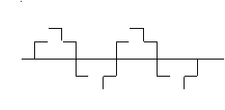
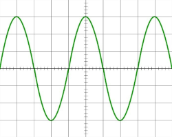

Um pouco sobre computadores e internet.
Digitos binarios
Digitos binarios ou "bits" são representados por "0" ou "1". Para representar uma informação no computador é necessário no minimo 8 bits e esse conjunto tem o nome de "Byte".
- 01000000 = "A"
Existem também os multiplos de byte, á cada 1024 unidades é dada uma nova medida. Por exemplo:
- 1024 bytes= 1KB
- 1024KB= 1MB
- 1024MB= 1GB
- 1024GB= 1TB
Uma curiosida interessante que quase ninguem percebe é a diferença entre "MB" e "Mb", MB é usado para armazenamento e Mb é usado para transmissão.
Sinais
A internet é ligada á rede de telefone, mas usam sinais ou linguagens diferentes, esses são o "sinal digital" e o "sinal analógico".
Sinal digital:
O computador entende todas as informações em sinais digitais, isto é, ondas de informação em formato quadrado essas são representadas por "0" e "1" (números binarios).
Sinal analogico:
A rede telefonica trasnmite informação com outro tipo de sinal esse é o sinal analogico esse sinal é representado por ondas.
